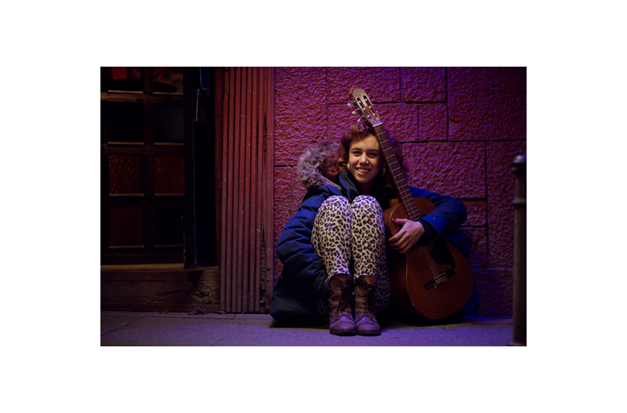

Gallega con raíces Argentino-italianas, La Gata Zurda (Catalina Salom)
presenta su primer proyecto en solitario. Una fusión de estilos musicales sin límites.
Que al igual que ella, no entiende de fronteras.
Letras inspiradas en sueños de la propia artista y melodías que nos llevan a Latinoamérica.